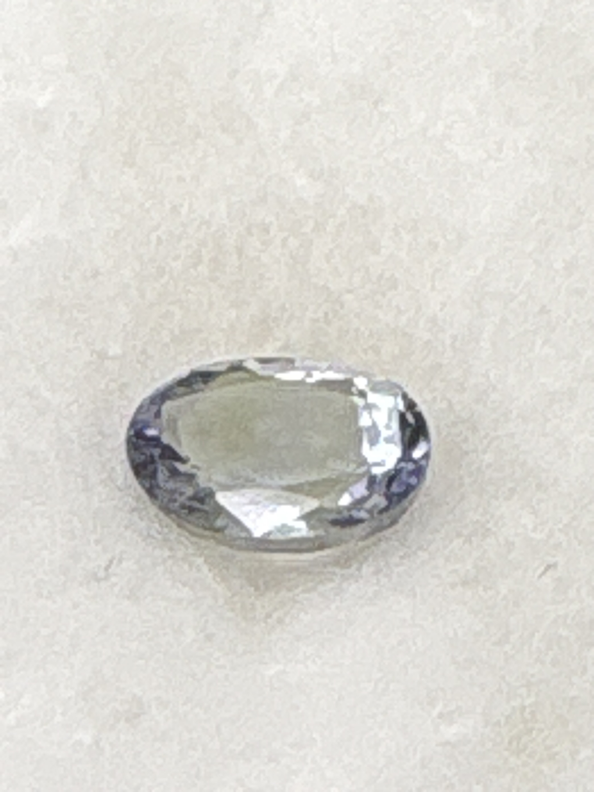

The Gem Drawer › No. 27

Labeled tanzanite at 5.5 x 7.5 mm, but the stone photographs near-colorless.
| Catalogue no. | #27 |
|---|---|
| As labeled | Natural Tanzanite (AS LABELED - stone appears colorless/pale in photos, see notes) |
| Shape / cut | Oval |
| Weight | 1.1 ct |
| Measurements | 5.5 x 7.5 |
| Colour | Appears colorless to very pale grey/white in photos (label states tanzanite, normally blue-violet - see notes) |
| Clarity / condition | Not recorded |
Interested in this stone, or in the collection as a whole? Terry VanWormer can answer questions about it.
Click here to inquireor email Terry directly at maxrebo34@gmail.com